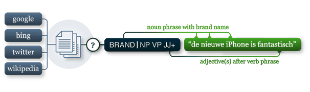

pattern.nl
The pattern.nl module contains a fast, regular expressions-based shallow parser for Dutch (identifies nouns, adjectives, verbs, etc. in a sentence) and tools for Dutch verb conjugation and noun singularization & pluralization.
It can be used by itself or with other pattern modules: web | table | nl | search | vector | graph.

Documentation
The commands in this module work in exactly the same way as their counterparts in pattern.en – detailed documentation can be found there. For Dutch nouns there is singularize() and pluralize(). For Dutch verbs there is conjugate(), lemma(), lexeme() and tenses():
>>> from pattern.nl import singularize, conjugate, INFINITIVE
>>> print singularize('katten')
>>> print conjugate('zaten', tense=INFINITIVE)
kat
zitten
Dutch adjectives followed by a noun inflect with an -e suffix (e.g., braaf → brave kat). You can get the base form with the predicative() command, or vice versa with attributive():
>>> from pattern.nl import predicative
>>> print predicative('brave')
braaf
For opinion mining there is sentiment(), which returns a (polarity, subjectivity)-tuple, based on a lexicon of adjectives. It has an accuracy of 79% (P 0.77, R 0.83) for book reviews:
>>> from pattern.nl import sentiment
>>> print sentiment('Een onwijs spannend goed boek!')
(0.55, 0.90)
For parsing there is parse() and split():
>>> from pattern.nl import parse, split
>>> s = parse('De kat zit op de mat.')
>>> s = split(s)
>>> print s.sentences[0]
Sentence('De/DT/B-NP/O kat/NN/I-NP/O zit/VBZ/B-VP/O op/IN/B-PP/B-PNP de/DT/B-NP/I-PNP mat/NN/I-NP/I-PNP ././O/O')
See the pattern.en documentation on how to manipulate Sentence objects (here).
Accuracy – parser
The parser is built on Jeroen Geertzen's Dutch language model, see:
http://cosmion.net/jeroen/software/brill_pos/
The accuracy of the Dutch tagger is reported around 92%, but the score for the implementation in Pattern may vary slightly from Geertzen's results, since the original WOTAN tagset is mapped to Penn Treebank. If you need to work with the original tags you can use parse() with an optional parameter tagset="WOTAN".
Accuracy – noun & verb inflection
Noun pluralization and singularization is less robust (accuracy 80% and 91% respectively) than the English implementation. The lexicon for verb conjugation contains 3,700 common Dutch verbs; otherwise it will fall back to a rule-based approach with an accuracy of about 80%. The parser will combine singularize(), conjugate() and predicative() to do word lemmatization.